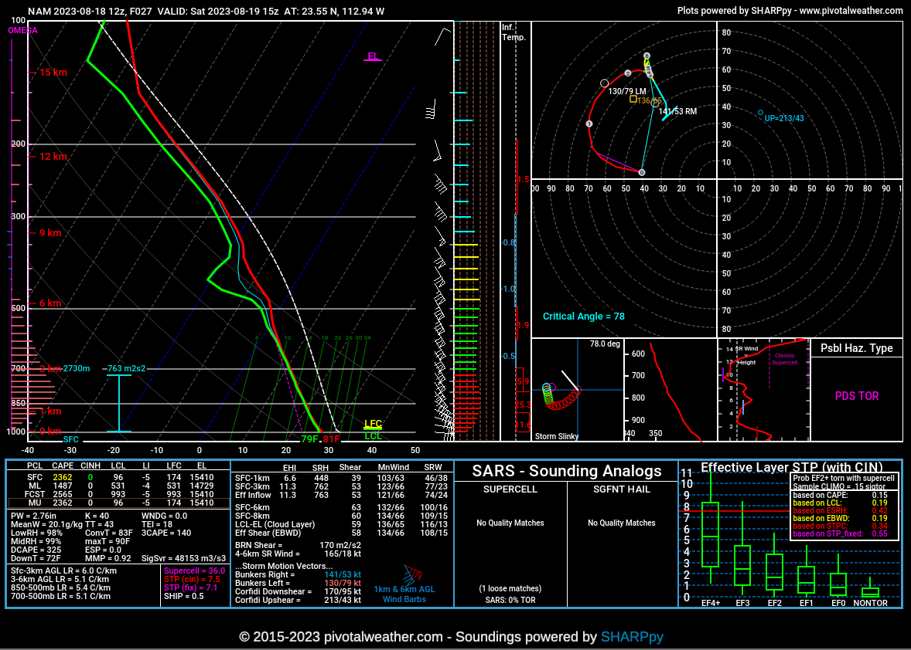
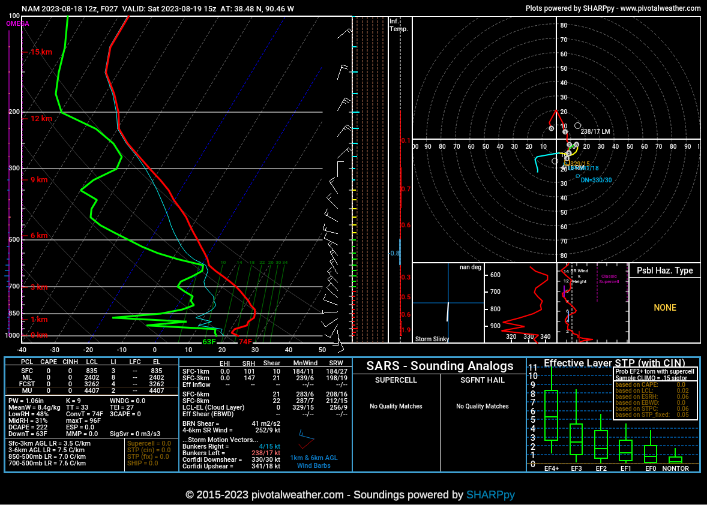

Shew chart from a cyclone on the california coast
Witch when looking at it you can see it's very good example of that server looks like on this chart

This one is a calm middle of nowhere chart with no severe weather happening (please ignore the wind direction that is a latter lesson) usually its one direction or within 180 of each other
When analyzing a skew-T log-P diagram, meteorologists look for various patterns and relationships between lines and values that can provide insights into atmospheric stability, moisture, and potential for severe weather. Here are some specific things meteorologists look for on the chart:
1. Temperature Profile (Environmental Lapse Rate):
- Rapid temperature decreases (steep lapse rates) with height can indicate potential instability and a greater likelihood of severe weather.
2. Overlapping Lines:
- Overlapping temperature and dew point lines suggest high humidity and the potential for cloud formation, precipitation, and convective activity.
3. Dew Point:
- Comparing dew point and temperature lines can indicate moisture levels and the potential for condensation and cloud formation.
4. Lifting Condensation Level (LCL):
- A lower LCL height suggests that air near the surface is moist and could lead to cloud formation and storms.
5. Temperature-Dew Point Spread:
- A narrow spread indicates high moisture content and conditions conducive to convection and precipitation.
6. Convective Available Potential Energy (CAPE) and Convective Inhibition (CIN):
- A large area between the environmental lapse rate and a parcel's ascent curve indicates high CAPE and potential for strong updrafts.
- A negative area between the parcel's ascent curve and the environmental lapse rate indicates low CIN and potential for parcel ascent and storm development.
7. Wind Shear:
- Wind barbs that change significantly with height suggest favorable conditions for storm organization and rotation.
8. Adiabatic Processes:
- Comparing the environmental lapse rate (ELR) with the dry adiabatic lapse rate (DALR) and moist adiabatic lapse rate (MALR) helps assess atmospheric stability.
9. Elevated Mixed Layers:
- Elevated warm, moist layers above a stable layer can enhance instability and support storm development.
- Hodographs (wind profiles) help assess the potential for storm rotation and severe weather development.
- 11. Fronts and Boundaries:
- Sharp changes in temperature, moisture, or wind can indicate the presence of weather fronts or boundaries that can trigger severe weather.
- 12. Stable Layers and Inversions:
- Layers where temperature increases with height suggest atmospheric stability, which can inhibit convection.
Meteorologists assess these patterns to determine the potential for atmospheric instability, moisture availability, and the likelihood of severe weather phenomena like thunderstorms, tornadoes, and other convective events. By understanding these chart elements, meteorologists can make informed forecasts and issue weather alerts to keep the public safe.
each of the elements you might find on a skew-T log-P diagram in the context of assessing severe weather potential:
1. Environmental Lapse Rate (ELR):
- The rate at which temperature changes with height in the atmosphere.
- A steep ELR indicates rapid cooling with height, which can contribute to instability and potential for thunderstorms.
2. Temperature-Dew Point Spread:
- The difference between the air temperature and the dew point temperature.
- A narrow spread suggests high humidity and the potential for condensation, cloud formation, and precipitation.
3. Lifting Condensation Level (LCL) Height:
- The level at which a parcel of air, if lifted, would cool to its dew point and condense.
- Lower LCL heights suggest a greater potential for cloud formation and potentially storm development.
4. Convective Available Potential Energy (CAPE) and Convective Inhibition (CIN):
- CAPE: Represents the potential energy available for an air parcel to rise freely from the surface to a given level. High CAPE suggests the potential for strong updrafts and severe storms.
- CIN: Represents inhibition or resistance to parcel ascent due to temperature and moisture conditions. Low CIN values indicate reduced inhibition for storm development.
5. Wind Shear:
- Wind speed and direction change with height.
- Significant wind shear can contribute to the organization of storms and rotation, which are important for severe weather development.
6. Parcel Trajectory:
- Tracing the path of an air parcel as it rises or descends through the atmosphere.
- Helps assess whether the parcel is positively or negatively buoyant and whether it will cool, condense, or remain dry as it ascends.
7. Adiabatic Processes:
- Dry Adiabatic Lapse Rate (DALR): The rate at which a dry air parcel cools as it rises. Represents unsaturated ascent.
- Moist Adiabatic Lapse Rate (MALR): The rate at which a saturated air parcel cools as it rises. Represents saturated ascent.
- Close alignment of the ELR with the MALR indicates the atmosphere is potentially primed for convection.
8. Fronts and Boundaries:
- Sharp changes in temperature and moisture content, often associated with the presence of weather fronts or boundaries.
- These features can trigger upward motion and contribute to storm development.
9. Stable Layers and Inversions:
- Layers where temperature increases with height.
- Stable layers can inhibit vertical motion and suppress convection, potentially leading to the stratification of the atmosphere.
10. Elevated Mixed Layers:
- Layers of warm, moist air above the surface that are separated from the surface by a stable layer.
- Elevated mixed layers can enhance instability and contribute to convective development.
These elements provide meteorologists with valuable information about atmospheric conditions that influence the potential for severe weather events like thunderstorms and tornadoes. Analyzing these patterns on skew-T log-P diagrams helps forecasters understand the vertical structure of the atmosphere and make predictions about the likelihood and intensity of severe weather.